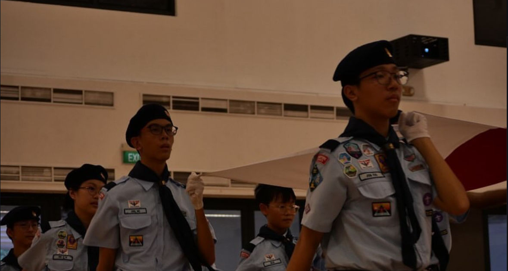
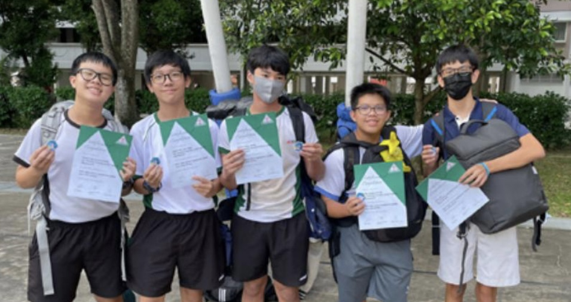
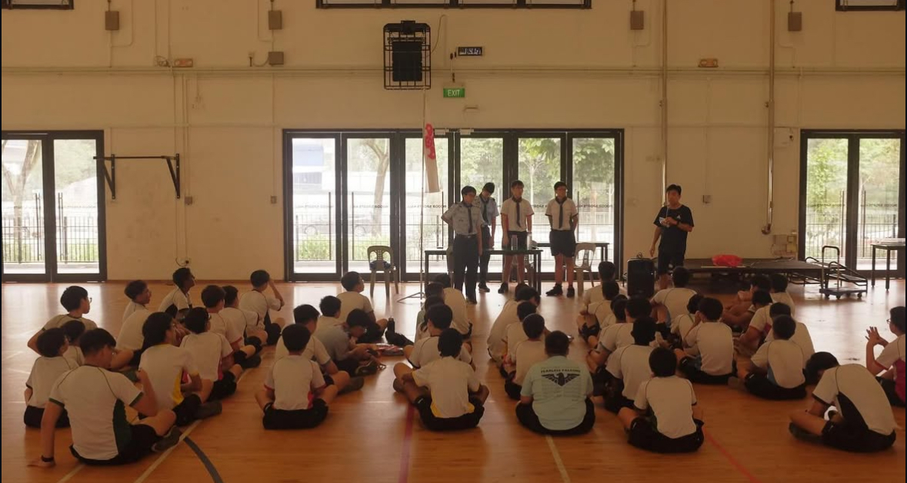

My scouts journey has been a long and fruitful one. From becoming an APL in Sec 2 to being promoted all the way to PA in Sec 4, I have learnt a lot. I have taken part in many Scouts activities, from guiding and teaching younger scouts how to be proper scouts, to leading activities. Fond memories include being the assistant camp chief for the 2024 Scout Unit Camp, and helping out at events like CCA trials and planning CCA activities. I also enjoyed taking part in the National Day ceremony and various West Area camps like SLC.
I’ve gained various skills through badges and lessons, like first aid, dragon boating, and outdoor cooking. I've developed as a leader after being given the opportunity to lead a whole patrol. My Scouts journey has been one of learning, development, and responsibility. Being a Scout is not just about being a member of a CCA, but being part of a larger family that extends across nations.
A Scout is to be trusted, loyal, friendly, disciplined, and courageous. The Scout’s Own has been a guiding presence through every step of my leadership journey to improve both my patrol and myself.
My first experience with leadership in Scouts came in 2023, during Secondary 2, when I was appointed as the Assistant Patrol Leader. This marked a significant turning point, as it was the first time I was entrusted with responsibilities beyond personal tasks. I supported the Patrol Leader in organising activities, maintaining discipline, and ensuring effective communication within the patrol.
In 2024, following the stepping down of my seniors, I was honoured to be promoted to the role of Patrol Leader. This was a significant step forward in my journey. As Patrol Leader, I took on greater responsibilities: guiding my patrol, planning and executing activities, and ensuring each member felt engaged and supported. I became the main point of contact between my patrol and the teachers, which required strong initiative and discipline.
During this time, I also helped organise events such as the 3-day Unit Camp and Sec 1 tryouts.
In Secondary 4, I was once again given the opportunity to progress in my leadership journey by becoming Patrol Advisor. Although my time in this role was brief due to stepping down, it was deeply meaningful. I mentored the newly promoted patrol leaders and shared the knowledge I had gained through the years.
This role allowed me to shift from direct leadership to a more supportive one, leading through influence and mentorship.